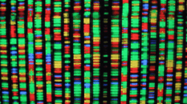

Hello. Hola. Aloha. Bonjour. स्वागत , مرحباً, ښه راغلاست , خوش آمدید, Haai, Grüßgott. Goedendag. Oi. Shalom. Assalam o Alaikum, Guten Tag. Ciào. Malo e lelei. Hei. 欢迎, 안녕. Yo.

Imran Razzak
Associate Professor, Computational Biology
Department of Computational Biology
MBZUAI, Abu Dhabi, UAE
Associate Editor- IEEE TNNLS, Neural Network, IEEE TCSS, IEEE JBHI
Short biography
Imran Razzak is an Associate Professor at MBZUAI, UAE, Abu Dhabi. Before joining MBZUAI, he was Associate Professor in Human-Centered Machine Learning at the School of Computer Science and Engineering at the University of New South Wales, Sydney, Australia. Previously, he was a Senior Lecturer in Computer Science at the School of IT, Deakin University, Victoria. His research focuses on connecting language and vision for better interpretation of multidimensional data and spans three broad areas: Machine Learning, Computer Vision, and Natural Language Processing with special emphasis on healthcare and the use of natural language to explain the rationale and decision-making process behind machine learning algorithms and models. With a strong background in computer vision and deep learning techniques, he has developed expertise in analysing and interpreting medical images (US, mammogram, CT, PET, MRI, fMRI) to improve patient outcomes. Throughout his career, he has worked on projects involving machine learning algorithms for medical image analysis. His work has resulted in more than 200 publications in leading journals and conferences. Through his research, he has made significant contributions to early diagnosis. Additionally, he has collaborated with medical professionals to develop tools for early diagnosis of medical conditions, including cancer, neurodegenerative disease, and heart disease.
Research Interests
I'm passionate about Deep Learning, Machine Learning, Computer Vision and Natural Language Processing. My personal mission is to build AI-based solutions that solve high-impact problems for us to simplify our everyday living.
We are excited to announce multiple open positions for prospective PhD students in cutting-edge fields: LLM+KG towards improving LLM capabilities. We are looking for highly self-motivated individuals who are passionate about research. If you are interested, please send me an email with the following documents: your updated Resume and a detailed Research Proposal. Join us on this thrilling academic journey as we explore new frontiers in these exciting areas of study. Looking forward to hearing from you!
Looking for highly self-motivated individuals who are passionate about research in healthcare (early diagnosis and longitudinal analysis). If you are interested, please send me an email with the following documents: your updated Resume and a detailed Research Proposal. Join us on this thrilling academic journey as we explore new frontiers in these exciting areas of study. Looking forward to hearing from you!
Dual-doctorate degree candidates/visiting students/visiting scholars in the areas of ML/Human-Centered AI are also welcomed
What's new?
 [Aug, 2025] 2 papers accepted in EMNLP.
[Aug, 2025] 2 papers accepted in EMNLP.- [Aug, 2025] Our team ranked 1st in AIM 2025 Rip Current Segmentation (RipSeg) Challenge Report.
- [July, 2025] 1 paper accepted in ACM MM and one in CIKM.
- [July, 2025] We released OphNet-3D, the first extensive RGB-D dynamic 3D reconstruction dataset for ophthalmic surgery.
- [April, 2025] 2 papers accepted in MICCAI and 2 papers in IEEE SMC.
- [March, 2025] Paper accepted in CVPR (ORAL) and one in ACL (ORAL).
- [March, 2025] 1 paper accepted in NPJ Digital Medicine.
- [March, 2025] Our work "Retinal Pathways to Asthma Diagnosis: AI-Driven Insight" accepted in ARVO.
- [Feb, 2025] 1 main and 4 companion accepted in WWW (Sydney).
- [Jan, 2025] Joined MBZUAI as an Associate Professor of Computational Biology; looking for motivated Post Docs and PhDs/MS students.
- [Nov, 2024] Three papers accepted in COLING 2025.
- [Oct, 2024] Two papers accepted in NeurIPS 2024.
- [Sept, 2024] Three papers accepted in WISE 2024.
- [Sept, 2024] Two papers accepted in ICDM.
-
[Jan, 2024] Our paper
"Self-Supervised Spatial-Temporal Transformer Fusion Based Federated Framework for 4D Cardiovascular Image Segmentation"
accepted in "Information Fusion".
-
[Sept, 2023]
CI: Leveraging Foundation Models for Accelerated Materials Science Research, Microsoft Accelerate Foundation Models Research Program, 20K (access to Azure OpenAI GPT-4 model)
-
[Aug, 2023] We are pleased to release
Darwin foundational LLM
, tailored for scientific domains (materials science, chemistry, physics).
-
[June, 2023] Our work
"Multi-classification of retinal diseases using a Pyramidal Ensemble Deep Framework"
accepted in ICIP.
-
[March, 2023] Our work
"High-Density Electroencephalography and Speech Signal based Deep Framework for Clinical Depression Diagnosis"
accepted in IEEE TCBB.
-
[March, 2023] Our work
"Simple and robust depth-wise cascaded network for polyp segmentation"
accepted in EAAI.
-
[March, 2023] Our work
"Segmentation of Intra-operative Ultrasound Using Self-supervised Learning Based 3D-ResUnet Model with Deep Supervision"
published (MICCAI iUS Challenge).
-
[Feb, 2023]
"Distributed Optimization of Graph Convolutional Network using Subgraph Variance"
accepted in IEEE TNNLS.
-
[Feb, 2023]
"AIROGS: Artificial Intelligence for RObust Glaucoma Screening Challenge"
(Glaucoma - AIROGS Challenge).
-
[July, 2022] Our research team won the
best demo award
at MDM 2022. Paper:
here.
Contact Information
- Position: Associate Professor, Computational Biology
- Department: MBZUAI, Abu Dhabi
 +971 2811 171
+971 2811 171-
 imran.razzak
imran.razzak  {mbzuai.ac.ae}
{mbzuai.ac.ae}
Disclaimer
This is a personal website. The opinions expressed are mine and do not necessarily represent the views of my employer.